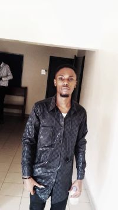
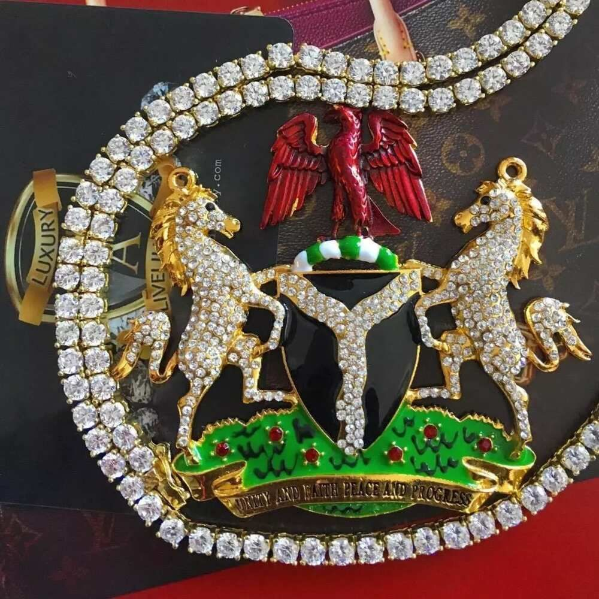

About Me
Hi my name is Iwuagwu Lawson chimdia, I'm in my early twenties (20s). I'm from Nigeria in Africa I'm a member of the church of Jesus Christ of latter day saints infect I'm a child of record that's to say I was born in the church. I'm the first born and I have three siblings two boys and one girl. I'm a science student, I love exploring new things, playing high top games like football,CoD and God of war) lol, don't mind me saying all that, also I'm a free minded person with growth mindset. I love improving and learning. I'm not scared of anything new. I love sharing and reading the scriptures. I love the prophets. I create a healthy and funny atmosphere anywhere I'm. I got a good reputation. 🏳 I love exercising and also love eating but not much. I love technology especially programming .😍 This a little about my bio.
I'm from Nigeria
Nigeria is a country located on the western coast of Africa. It boasts a diverse geography, with climates ranging from arid to humid equatorial. What truly sets Nigeria apart, though, is its people. Hundreds of languages are spoken in the country, including Yoruba, Igbo, Fula, Hausa, Edo, Ibibio, Tiv, and English1. The national capital is Abuja, situated in the Federal Capital Territory, which was established by decree in 1976. While Lagos, the former capital, remains the leading commercial and industrial city in Nigeria.